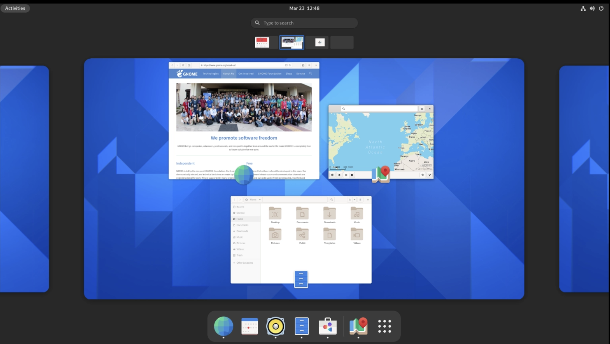
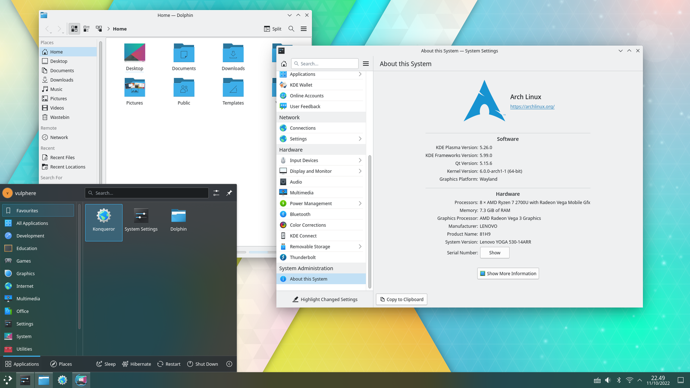
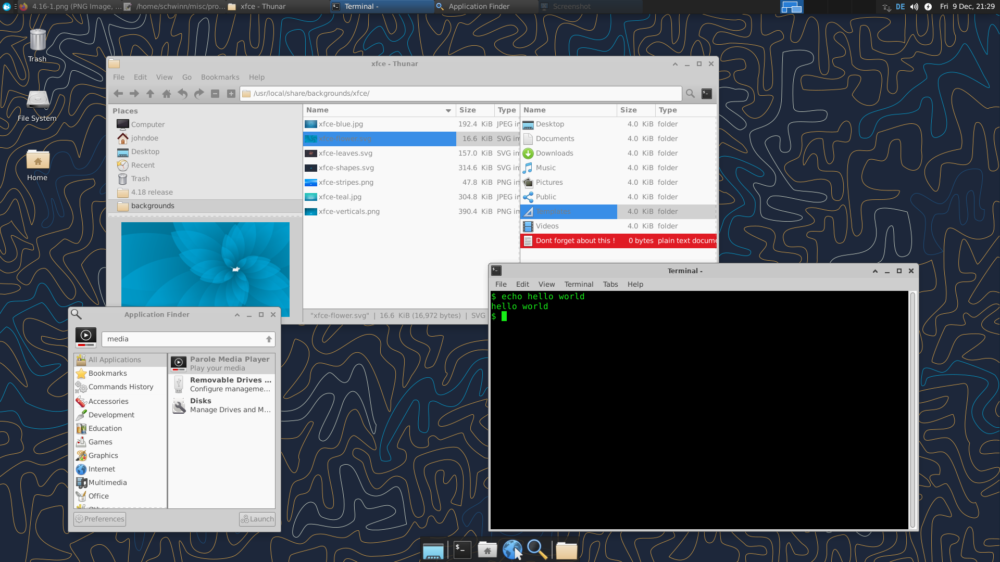

106.2 دسکتاپ گرافیکی
وزن: 1
داوطلبان باید از دسکتاپ های اصلی لینوکس آگاه باشند. علاوه بر این، نامزدها باید از پروتکلهایی که برای دسترسی به جلسات دسکتاپ از راه دور استفاده میشوند آگاه باشند.
حوزه های دانش کلیدی
- آگاهی از محیط های اصلی دسکتاپ
- آگاهی از پروتکل های دسترسی به جلسات دسکتاپ از راه دور
شرایط و امکانات
- KDE
- گنوم
- Xfce
- X11
- XDMCP
- VNC
- ادویه
- RDP
محیط های دسکتاپ
هنگامی که سیستم شما در حالت گرافیکی بوت می شود، صفحه ورود به سیستم گرافیکی را مشاهده خواهید کرد. این بر اساس پروتکل کنترل مدیریت نمایشگر X (XDMCP) است که مسئول سیستم ورود به سیستم است. در بالای آن، برنامه های مختلفی مانند GDM (برای GNOME)، SSDM (KDE) و یک گزینه کلی تر XDM، موضوع و سایر جنبه های ورود را مدیریت می کنند.
پس از ورود موفقیت آمیز، شما در رابط کاربری گرافیکی خود خواهید بود. به طور کلی این یک بسته نرم افزار بزرگ است که ویندوز، ماوس شما را مدیریت می کند و دارای آیکون ها و پوشه های قابل کلیک با قابلیت کشیدن و رها کردن است. حتی ممکن است جایی یک سطل زباله و بسیاری از نرم افزارهای دیگر مانند ماشین حساب و یک سرویس گیرنده ایمیل وجود داشته باشد. اینها محیط های دسکتاپ نامیده می شوند. از سوی دیگر، برخی از افراد ترجیح می دهند که یک مدیر پنجره حداقل بدون همه زنگ ها و سوت ها داشته باشند و آنها را بر اساس ترجیحات خود انتخاب و اضافه کنند.
یک مدیر پنجره مسئول نمایش و مدیریت ویندوز در رابط کاربری گرافیکی شما است. حتی مینیمالیستی ترین رابط کاربری گرافیکی نیز برای عملکرد به یک مدیر پنجره نیاز دارد. اما کتابخانه ها و نرم افزارهای بیشتری را به مدیر پنجره خود اضافه کنید (مثلاً یک ماشین حساب، تقویم، سرویس گیرنده ایمیل، برنامه های برنامه نویسی برای آن محیط خاص، نقشه ها و ...) و در نهایت به چیزی خواهید رسید که محیط دسکتاپ نامیده می شود.
در این بخش به بررسی 3 مورد از معروف ترین محیط های دسکتاپ می پردازیم و سپس در مورد "دسترسی از راه دور" به محیط های دسکتاپ صحبت خواهیم کرد.
گنوم

- از سال 1999 شروع شد
- بر بهره وری و دسترسی تمرکز می کند
- توسط اکثر توزیع های گنو/لینوکس استفاده می شود
KDE [پلاسما]

- از سال 1996 شروع شد
- از نسخه 5 (2016) به KDE Plasma تغییر نام داد
- بسیار قابل تنظیم
- در ماموریت مریخ در ناسا استفاده شد
- CERN از KDE استفاده می کند
XFCE

- از سال 1999 شروع شد
- سبک اما زیبا
- مدولار
اتصال از راه دور به رابط کاربری گرافیکی
موقعیت های زیادی وجود دارد که می خواهید از راه دور به سیستم مبتنی بر رابط کاربری گرافیکی خود متصل شوید. این می تواند کمک از راه دور به یک دوست، بررسی وضعیت رایانه خود از طریق تلفن، استفاده از یک برنامه مبتنی بر رابط کاربری گرافیکی بر روی یک دستگاه از راه دور بسیار قوی تر باشد یا مانند یک همکار، لپ تاپ را در آزمایشگاه مخفی کنید و از راه دور به آن متصل شوید و زمانی که باید به دفتر می رفتید از خانه کار کنید (نباید!).
در اینجا به بررسی سریع برخی از این روش ها می پردازیم.
X فوروارد
این در این بخش در LPIC1 ذکر نشده است، اما دانستن آن بسیار مفید است. اگر سرور SSH دارید، می توانید به آن متصل شوید و نرم افزارهای رابط کاربری گرافیکی را در آنجا اجرا کنید و قسمت GUI برنامه را روی دستگاه خود دریافت کنید. این X-Forwarding در ssh نامیده می شود.
ابتدا مطمئن شوید که X11Forwarding yes در /etc/ssh/sshd_config پیکربندی شده است (و [سرویس مورد نیاز است راه اندازی مجدد شود]). سپس ssh خود را به صورت زیر انجام دهید:
$ ssh -X server_ip.address.net
$ xeyes
و آنها چشم به دستگاه خود شما ظاهر می شوند! شما می توانید همین کار را برای اجرای یک مرورگر یا یک نرم افزار شبیه سازی cpu hungry انجام دهید.
VNC
کامپیوتر شبکه مجازی (VNC) مدت ها پیش شروع به کار کرد و هنوز فعال و زنده است. این چند پلت فرم است و از پروتکل RFB استفاده می کند. پورت پیش فرض آن 5900 + [شماره نمایش، معمولاً به طور پیش فرض 1 است] است، بنابراین برای اتصال از طریق VNC باید از پورت 5901 استفاده کنید.
نکته خوب در مورد VNC انعطاف پذیری و مشتریان آن در تمام پلتفرم ها است اما فاقد امنیت است.
ادویه
پروتکل ساده برای محیط محاسباتی مستقل به عنوان یک نرم افزار منبع بسته شروع شد اما زمانی که RedHat این شرکت را در سال 2008 خرید، تبدیل به منبع باز شد. می توان از آن برای اتصال به ماشین های مجازی KVM (یک سیستم ماشین مجازی بسیار رایج) استفاده کرد و دارای مزایایی مانند سرعت های سریع مشابه اتصالات محلی و استفاده کم از CPU است. یک اجرای سرور وجود دارد اما میتوانید کلاینتهای زیادی از جمله برنامه جعبههای گنوم پیدا کنید.
RDP
با استفاده از نرمافزارهایی مانند Xrdp میتوانید به طور پیشفرض در پورت 3389 به اتصالات پروتکل دسکتاپ از راه دور (RDP) گوش دهید. ترافیک به طور پیش فرض رمزگذاری شده است و تعداد زیادی کلاینت RDP رایگان و باز در دسترس است.